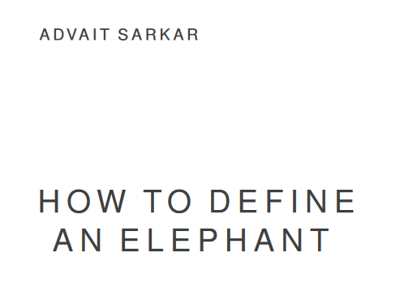

Teaching
← Read my short book on the Cambridge supervision system, called 'How to define an elephant'!
The book is also available as a PDF.
Supervisions are an ancient teaching system used by Cambridge and Oxford, in which students interact in very small groups (usually 2 or 3) with a subject tutor. I used to supervise many undergraduate courses at Cambridge.
Students and interns
-
Nancy Xia.
Ph.D., University College London, 2022—present (co-supervised with Duncan Brumby and Anna Cox).
In-app learning interfaces for feature-rich software.
📜 Paper at VL/HCC 2024, CSCW 2025 -
Hao-Ping (Hank) Lee. Microsoft Research Internship, 2024.
Understanding how Generative AI affects critical thinking in knowledge work.
📜 Paper at CHI 2025 -
Xiaotong (Tone) Xu. Microsoft Research Internship, 2023.
Critical data-driven sensemaking with large language models.
📜 Papers at CHIWORK 2024, EuSpRIG 2024 -
Majeed Kazemitabaar. Microsoft Research Internship, 2023 (advised1).
Interactive data analysis programming with large language models.
📜 Paper at UIST 2024 -
Michael Xieyang Liu. Microsoft Research Internship, 2022.
Natural language interaction for end-user programmers.
🏆 Honourable mention at CHI 2023. 💡 Patent filing -
Kasra Ferdowsi. Microsoft Research Internship, 2022 (advised1).
Data-oriented debugging for end-user programmers.
📜 Paper at VL/HCC 2023. 💡 Patent filing - Chialing Hsia. M.Sc., University College London, 2022 (advised1). Learning spreadsheets through TikTok.
- Bingqing Li. M.Sc., University College London, 2022 (advised1). Challenges of bilinguals learning spreadsheet formulas.
-
Sanay Bordia. CCIR mentorship, 2022.
Using Large Language Models to Assist Content Generation in Persuasive Speaking.
📜 Paper at Intersect: The Stanford Journal of Science, Technology, and Society -
George Chalhoub. Microsoft Research Internship, 2021.
Data structuring by end-user programmers.
📜 Paper at CHI 2022. 💡 Patent filing -
Carlos Gonzalez Diaz. Microsoft Research Internship, 2021 (advised1).
Conversational transitions for video meetings.
📜 Paper at CHIWORK 2022 -
Tianna Xu. Microsoft Research Internship, 2021.
Research productivity in hybrid work.
📜 Paper at CHIWORK 2023 - Xiao Yuan. M.Sc., University College London, 2021 (advised1). Application-integrated teaching strategies for end-user programmers.
- Milena Wojciechowska. M.Sc., University College London, 2021 (advised1). Help-seeking strategies of end-user programmers.
-
Theodore Patsis. CCIR mentorship, 2021.
Computing movie script similarity with neural word embeddings.
📜 Paper at IEEE MIT Undergraduate Research Technology Conference (URTC) 2022 -
Aaron Stockdill.
Ph.D., University of Cambridge, 2017—2021 (co-advised1 with Mateja Jamnik).
Automating representation change across domains for reasoning.
📜 Papers at VL/HCC, ExSS, Diagrams -
Samuel Lau. Microsoft Research Internship, 2020.
Supporting end-user code tweaking.
📜 Paper at CHI 2021 -
Henry Mattinson. Undergraduate dissertation, University of Cambridge, 2019.
Music generation in Microsoft Excel.
📜 Paper at NIME 2020 -
Nima Joharizadeh. Microsoft Research Internship, 2019 (advised1).
Reusing spreadsheet grids.
📜 Paper at CHI LBW 2020. 💡 Patent filing. -
Sruti Srinivasa Ragavan. Microsoft Research Internship, 2018.
Evaluating spreadsheet comprehension with multiple representations.
💼 Subsequently hired as MSR postdoc. Now professor at IIT Kanpur. -
Ruixue Liu. Microsoft Research Internship, 2018.
Comparing methods for personalising intelligent systems.
📜 Paper at ExSS 2019 -
Judith Borghouts. Microsoft Research Internship, 2017 (advised1).
Uncertainty in spreadsheets.
📜 Paper at QEST 2019. 💡 Patent filing. -
Matt McCutchen. Microsoft Research Internship, 2017 (advised1).
Generalising spreadsheet functions for variable-length input by example.
📜 Paper at JFP 2020. 💡 Patent filing. - Laszlo Makk. Undergraduate dissertation, University of Cambridge, 2017. Automated captioning of visualised data.
- Ben P.W. Catterall. Undergraduate dissertation, University of Cambridge, 2016. Parallelized Deep Learning for Convolutional Networks on the Intel Xeon Phi.
- Tamas Stzanka-Toth. Undergraduate dissertation, University of Cambridge, 2016. Cached Bug Prediction for Python Repositories on GitHub.
-
Ana Šemrov. Undergraduate dissertation, University of Cambridge, 2016.
Interactive exploration of latent semantic spaces.
🏆 Best poster award at OWCSC 2016 📜 Paper at Diagrams 2018 - Tanvi S. Potdar. Undergraduate dissertation, University of Cambridge, 2016. Semantic Markup of Heterogeneous Networks for Concept Evolution.
- Lawrence F. Dior. Undergraduate dissertation, University of Cambridge, 2016 (advised1). Visualising uncertainty of approximate database queries through sketchy rendering.
-
Mariana Mărășoiu.
M.Phil. dissertation, University of Cambridge, 2015 (advised1).
Consultative sketching of statistical hypotheses.
🏆 Honourable mention at Eurographics/IEEE VGTC EuroVis 2016 - Neil Satra. M.Eng. dissertation, University of Cambridge, 2015 (advised1). Sketching Statistical Queries.
-
Maria Gorinova.
Undergraduate dissertation, University of Cambridge, 2015.
Interactive Development Environment for Probabilistic Programming.
📜 Paper at CHI 2016 🏆 Young researcher prize at OWCSC 2016 -
Abhishek Chander. Undergraduate dissertation, University of Cambridge, 2015.
Dynamic Visualisation of Data Based on Eye-Tracking.
📜 Paper at PPIG 2016 - Roman Kolacz. Undergraduate dissertation, University of Cambridge, 2015. Time-Lapse Based Weather Classification.
- Neil Satra. Undergraduate dissertation, University of Cambridge, 2014 (advised1). Sketching Charts.
- Mario Carreon. M.Phil. dissertation, University of Cambridge, 2014. A study of the usage of the R statistical programming language based on mining a source code corpus.
Other teaching
- Co-designer of Practical Research in Human-centred AI (formerly titled Interaction With Machine Learning), a course for the MPhil in advanced computer science at the University of Cambridge, 2024-25, 2023-24, 2022-23, 2021-22, 2020-21, 2018-19, 2017-18.
- Invited lecturer for Interaction Science, a module for the HCI MSc at University College London, 2023, 2024
- Invited lecturer for Designing Decisions, a second-year "live project'' module in the BA design course at Goldsmiths, University of London, 2017
- Honorary demonstrator for An introduction to digital design for graduate students in the humanities and social sciences, an experimental course run in collaboration by the Computer Lab and the Cambridge Centre for Research in Arts, Social Science and Humanities (CRASSH), 2014.
Cambridge undergraduate courses supervised
| First year courses (Part IA) | Second year courses (Part IB) | Final year courses (Part II) |
|---|---|---|
|
Object-Oriented Programming
Software and Interface Design |
Introductory Artificial Intelligence (AI-I)
Software Engineering |
Advanced Artificial Intelligence (AI-II)
Human-Computer Interaction Information Retrieval |